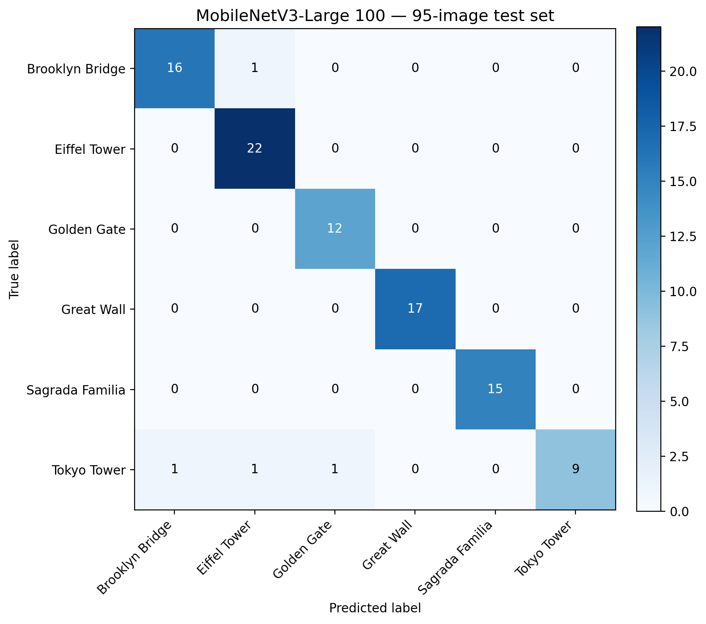
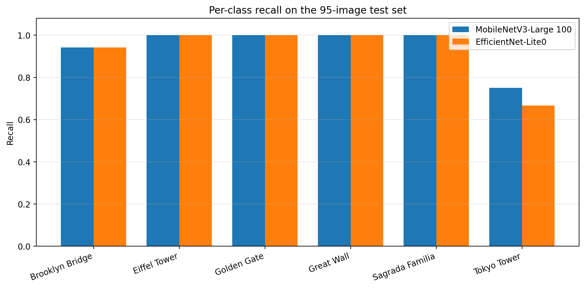
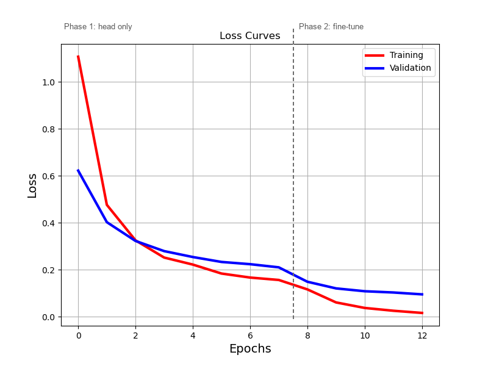
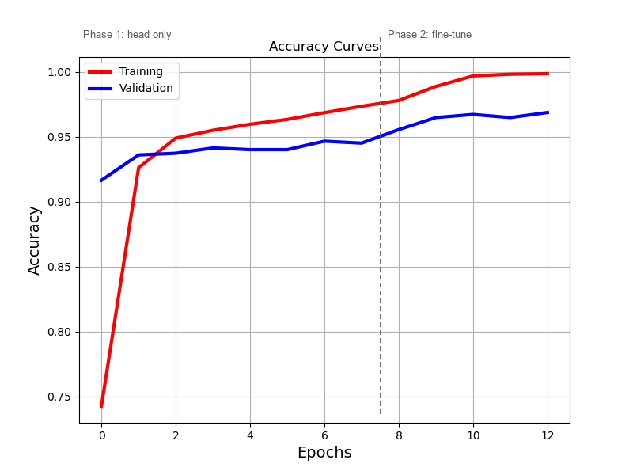

Que una foto sepa qué monumento está mirando.
Clasificador de imágenes con PyTorch + timm: distingue 6 monumentos del mundo, devuelve la etiqueta y la confianza, y se exporta a ONNX para ejecutarse en CPU o Raspberry Pi. Entrenado con transfer learning en dos fases y evaluado sobre un test deliberadamente difícil.
$ python -m landmark_classifier.predict \ --checkpoint best.pt --input foto.jpg # salida (ejemplo) { "prediction": "Eiffel_Tower", "confidence": 0.9942, "top_3": [ ["Eiffel_Tower", 0.9942], ["Tokio_Tower", 0.0031], ["Great_Wall", 0.0012] ] } ▌
Una imagen entra, una etiqueta sale.
El modelo recibe una foto RGB y la clasifica en una de seis clases. No dibuja cajas ni detecta objetos: asume que el monumento es el sujeto principal de la imagen. Es un clasificador cerrado, así que siempre devuelve una de las seis clases.
Las seis clases
En el dataset las carpetas conservan el nombre original:
Brooklyn_Bridge, Eiffel_Tower,
Golden_Gate, Great_Wall,
Sagrada_Familia y Tokio_Tower.
Salida del modelo
El modelo devuelve logits (6 números sin normalizar). En inferencia se aplica softmax para obtener probabilidades y se muestra la clase con mayor probabilidad junto con el top-k. El checkpoint guarda las clases, el tamaño de entrada y las estadísticas de normalización, así que predecir no requiere el script de entrenamiento.
No es un detector. No localiza el monumento dentro de la imagen ni devuelve bounding boxes. Si la foto contiene varias cosas, el modelo clasifica la escena completa.
Es un módulo de percepción. Puede ser la pieza que llama una app o un sistema mayor (por ejemplo, un robot o un asistente turístico) para saber qué monumento está viendo. El proyecto no incluye control de robot ni simulación.
Confianza, no certeza
Un 99% de softmax no significa un 99% de acierto garantizado. La confianza no está calibrada y el modelo no tiene una clase “no es un monumento”: si le das una foto de una persona, elegirá una de las seis clases.
Del píxel a la probabilidad, paso a paso.
El pipeline es deliberadamente sencillo: un backbone preentrenado, una cabeza lineal nueva y un preprocesado que coincide exactamente con el que vio el backbone durante el entrenamiento.
Preprocesado
Se convierte la imagen a RGB, se redimensiona el lado corto a 256 px, se recorta
el centro a 224 × 224 y se normaliza con la media y la desviación típica del
backbone. Esos valores no están escritos a mano: salen de
timm.data.resolve_model_data_config.
transform = transforms.Compose([
transforms.Lambda(lambda im: im.convert("RGB")),
transforms.Resize(256, interpolation=transforms.InterpolationMode.BICUBIC, antialias=True),
transforms.CenterCrop((224, 224)),
transforms.ToTensor(),
transforms.Normalize(mean, std),
])Backbone + cabeza
timm.create_model(..., num_classes=0) elimina la cabeza
ImageNet y devuelve el vector de características. La cabeza nueva es una sola capa
lineal de 1.280 → 6. El backbone aporta el conocimiento visual; la capa lineal
aprende a nombrar los seis monumentos.
class LandmarkClassifier(nn.Module):
def __init__(self, model_name, num_classes):
super().__init__()
# num_classes=0: el backbone devuelve features, no logits de ImageNet
self.backbone = timm.create_model(
model_name, pretrained=True, num_classes=0
)
# El código real sondea la salida (1.280) y crea la capa
self.classifier = nn.Linear(1280, num_classes)
def forward(self, x):
return self.classifier(self.backbone(x))Entrenamiento en dos fases
Fase 1 · solo la cabeza
Backbone congelado. 8 epochs, Adam, lr=1e-3.
La cabeza encuentra una frontera útil sobre las features de ImageNet.
Fase 2 · ajuste fino parcial
Se restauran los mejores pesos de la fase 1, se descongelan los dos últimos
bloques del backbone y se entrena con lr=1e-4 durante
5 epochs. El learning rate es 10× menor para no destruir las features.
Batch 64 · CrossEntropyLoss · Adam · imágenes aumentadas.
Un detalle que importa
En MobileNetV3, timm expone
num_features = 960, pero la salida real de
conv_head es de 1.280 dimensiones.
Si se confía ciegamente en num_features, la cabeza
se crea con el tamaño equivocado y el checkpoint no carga.
El código hace un forward de prueba en modo eval()
(sin actualizar las estadísticas de BatchNorm) y usa la dimensión real. Es una de
las correcciones que hace que el modelo sea robusto al cambiar de backbone.
Por eso el checkpoint funciona: la cabeza es 6 × 1.280 y coincide exactamente con el estado guardado. La carga estricta no reporta claves faltantes ni inesperadas.
Las decisiones que hacen que 3.040 imágenes basten.
Entrenar una CNN desde cero con ~3.000 imágenes habría sido una receta para el sobreajuste. El proyecto aprovecha un backbone preentrenado y adapta solo lo necesario.
Transfer learning
ImageNet aporta bordes, texturas, formas y patrones visuales. Solo se aprende la parte nueva: mapear esas features a seis monumentos. Con pocos datos, esto es mucho más eficiente que empezar de cero.
Dos fases, no una
Primero se adapta la cabeza sin tocar el backbone. Después se ajustan solo los últimos bloques, que son los más específicos de la tarea. Así se evita el catastrophic forgetting.
Data augmentation
Random resized crop, flip horizontal y color jitter suave. El modelo ve recortes, escalas, iluminaciones y filtros parecidos a los de fotos reales, sin cambiar la identidad del monumento.
Split estratificado
La validación se crea dentro de data/train con 75/25
estratificado. Cada clase está representada en train y validación, y el test queda
separado hasta la evaluación final.
BatchNorm congelado
Si un bloque está congelado, sus estadísticas de BatchNorm también deben quedarse
quietas. El training loop pone esas capas en eval() después
de model.train().
Preprocesado correcto
Media, desviación y tamaño de entrada se leen del backbone. Un cambio de modelo no rompe silenciosamente la accuracy por usar una normalización que no toca.
Checkpoint por validación
Se guarda el mejor estado por val_loss a lo largo de las
dos fases, no el último epoch. El test se toca una sola vez, al final.
Sin softmax en el modelo
CrossEntropyLoss espera logits. El softmax se aplica solo
al predecir. Evita el error clásico de aplicarlo dos veces y mejora la estabilidad
numérica.
Un test difícil a propósito
El test son capturas estilo Instagram: personas, texto, filtros, recortes y ángulos raros. Esa diferencia con el train es la que hace que el 95,8% sea una medida exigente, no un número inflado.
La idea en una frase: no se entrena “una CNN para monumentos” desde cero; se adapta un extractor de features muy bueno a un problema pequeño, con una cabeza nueva y un ajuste fino controlado.
95,8% en un test de 95 imágenes.
El checkpoint del proyecto se evaluó de nuevo sobre el test de 95 capturas. Estos son
los números que puedes reproducir con best.pt, no una
captura de una ejecución anterior.
| Modelo | Aciertos | Accuracy | Macro recall | Macro F1 |
|---|---|---|---|---|
| MobileNetV3-Large 100 (checkpoint del proyecto) | 91/95 | 95,8% | 94,9% | 95,2% |
| EfficientNet-Lite0 (ejecución registrada) | 90/95 | 94,7% | 93,5% | 94,1% |
MobileNetV3 se reevaluó desde el checkpoint del proyecto. EfficientNet-Lite0 es la ejecución registrada del proyecto; su checkpoint no se distribuye. Ambos usan el mismo test de 95 imágenes.




Lectura rápida
- Cuatro clases perfectas: Eiffel Tower, Golden Gate, Great Wall y Sagrada Família.
- Brooklyn Bridge: 16/17; el único error se va a Eiffel Tower.
- Tokyo Tower: 9/12; se confunde con Brooklyn, Eiffel y Golden Gate.
- El patrón tiene sentido: torres de celosía y puentes con torres de acero comparten silueta, sobre todo de noche o con recortes.
Cómo leer estos números
El test tiene solo 95 imágenes: un error cambia la accuracy en 1,05 puntos. El 95,8% es una estimación, no una garantía. Un intervalo aproximado del 95% ronda ±4–5 puntos porcentuales. Y el modelo es de mundo cerrado: siempre elige una de las seis clases.
Honestidad de resultados: el proyecto tuvo varias ejecuciones. La presentación original reportaba 93,6% para un run anterior de MobileNetV3; el checkpoint del proyecto, reevaluado, da 95,8%. Son runs distintos y el test es pequeño.
De cero a una predicción en cuatro pasos.
El proyecto incluye el código, el checkpoint y los comandos. El código se comparte bajo solicitud; si ya lo tienes, solo necesitas Python 3.10+ y las dependencias; para entrenar, una GPU ayuda pero no es obligatoria.
Instala
Solicita el código, crea un entorno e instala las dependencias. Para CUDA, usa el wheel de PyTorch que corresponda a tu driver.
Prepara los datos
data/train/<clase>/*.jpg y
data/test/<clase>/*.jpg. El dataset no se incluye;
el checkpoint se comparte con el código.
Evalúa o predice
Con best.pt puedes evaluar el test o clasificar una
foto sin entrenar nada.
Entrena o exporta
Reentrena con tus clases o exporta a ONNX para CPU / Raspberry Pi.
Instalación
# El código se comparte bajo solicitud (contacto WhatsApp).
# Si ya lo tienes, desde la carpeta del proyecto:
python -m venv .venv
# Windows
.venv\Scripts\activate
# Linux / macOS
source .venv/bin/activate
pip install -r requirements.txt
# opcional: consola y paquete instalable
pip install -e . --no-depsPara CUDA: instala primero el build de PyTorch de pytorch.org y luego el resto de requisitos.
Estructura de datos
Una carpeta por clase, con el mismo nombre en train y test:
data/
├── train/
│ ├── Brooklyn_Bridge/
│ ├── Eiffel_Tower/
│ ├── Golden_Gate/
│ ├── Great_Wall/
│ ├── Sagrada_Familia/
│ └── Tokio_Tower/
└── test/
├── Brooklyn_Bridge/
├── Eiffel_Tower/
├── Golden_Gate/
├── Great_Wall/
├── Sagrada_Familia/
└── Tokio_Tower/
La validación se crea dentro de data/train (75/25
estratificado); no crees una carpeta val/.
Evaluar y predecir con el checkpoint
# métricas sobre data/test
python -m landmark_classifier.evaluate \
--checkpoint best.pt \
--data-dir data
# una imagen
python -m landmark_classifier.predict \
--checkpoint best.pt \
--input foto.jpg \
--topk 3
# una carpeta + grid visual
python -m landmark_classifier.predict \
--checkpoint best.pt \
--input data/test \
--labels-from-folders \
--save-grid predicciones.png
No hace falta entrenar para probar el modelo: best.pt
(17 MB) se comparte junto con el código.
Entrenar desde cero
python -m landmark_classifier.train \
--data-dir data \
--output-dir runs/mobilenetv3_large100
# comparar otro backbone
python -m landmark_classifier.train \
--model tf_efficientnet_lite0.in1k \
--data-dir data \
--output-dir runs/efficientnet_lite0
Opciones útiles: --epochs-head 8,
--epochs-finetune 5,
--lr-head 1e-3,
--lr-finetune 1e-4,
--batch-size 64,
--unfreeze-blocks 2,
--device cuda.
| Salida del entrenamiento | Contenido |
|---|---|
best.pt | Pesos + clases + preprocesado + configuración |
history.json | Loss y accuracy por epoch |
test_metrics.json | Accuracy, macro F1, métricas por clase y matriz |
test_predictions.csv | Una fila por imagen del test |
training_curves.png | Curvas con la frontera entre fases |
test_confusion_matrix.png | Matriz de confusión |
El dataset no está incluido. Son ~3.040 imágenes de entrenamiento y 95 de test; pesa ~440 MB y las imágenes son de terceros. El proyecto comparte el código y el checkpoint bajo solicitud, no las fotos. Para entrenar necesitas tus propias carpetas con las seis clases.
PyTorch entrena; ONNX ejecuta.
El checkpoint se exporta a ONNX y se ejecuta con ONNX Runtime en CPU. En una Raspberry
Pi 4 no necesitas instalar PyTorch: solo onnxruntime,
NumPy y Pillow.
1. Exportar en el PC
pip install -r requirements-deploy.txt
python -m landmark_classifier.export_onnx \
--checkpoint best.pt \
--output exports/landmarks.onnx
El exportador comprueba la salida contra PyTorch si
onnxruntime está instalado y escribe las clases, el
tamaño de entrada y la normalización dentro del propio ONNX.
2. Ejecutar en PC o Raspberry Pi
# en la Raspberry Pi (64-bit recomendado)
sudo apt update
sudo apt install -y python3-pip
pip3 install onnxruntime numpy pillow
python3 onnx_inference.py \
--model landmarks.onnx \
--image foto.jpg \
--topk 3Contrato del ONNX
| Entrada | input, float32, [batch, 3, 224, 224] |
| Salida | logits, float32, [batch, 6] |
| Preprocesado | RGB, resize 256, center crop 224, (x - mean) / std |
| Metadatos | clases, tamaño, media y desviación dentro del ONNX |
La salida son logits, no probabilidades. Aplica softmax antes de interpretar la confianza.
import onnxruntime as ort
session = ort.InferenceSession(
"landmarks.onnx",
providers=["CPUExecutionProvider"],
)
input_name = session.get_inputs()[0].name
logits = session.run(None, {input_name: tensor})[0]Latencia
No se prometen milisegundos: depende de la Pi, la refrigeración, la versión de ONNX Runtime y el hilo. Mide en tu dispositivo antes de decidir.
Cuantización
La cuantización dinámica INT8 puede reducir tamaño y latencia, pero cambia la accuracy. Si la usas, reevalúa sobre el test.
Dónde encaja
Es la capa de percepción: recibe una imagen y devuelve clase + confianza. El control del robot, la navegación o la simulación no forman parte de este proyecto.
Un módulo por responsabilidad.
El código está separado para que puedas leerlo, cambiarlo y probarlo sin arrastrar toda la pipeline. Estas son las piezas principales.
Árbol del proyecto de código, que se comparte bajo solicitud. Este sitio público contiene solo la web y la documentación.
CNN_for_VisualRecognition/ ├── landmark_classifier/ │ ├── data.py # transforms, split, dataloaders │ ├── model.py # backbone + cabeza, freeze/unfreeze │ ├── engine.py # train loop, validación, métricas │ ├── train.py # CLI de entrenamiento en 2 fases │ ├── evaluate.py # evalúa un checkpoint en data/test │ ├── predict.py # inferencia 1 imagen / carpeta │ ├── export_onnx.py # export ONNX + metadata │ ├── checkpoint.py # guardar / cargar / reconstruir │ ├── reporting.py # JSON, CSV, classification report │ ├── plots.py # matrices, curvas, grid │ └── utils.py # seed, device, JSON ├── deploy/ │ └── onnx_inference.py # inferencia sin PyTorch ├── docs/ # pipeline, resultados, deploy ├── results/ # matrices registradas ├── scripts/ │ └── plot_results.py # regenera las figuras ├── data/README.md # layout; dataset no incluido ├── best.pt # checkpoint MobileNetV3 (17 MB) ├── requirements.txt ├── requirements-deploy.txt ├── LICENSE └── CONTEXT.md
model.py
Crea el backbone con num_classes=0, sondea la
dimensión real de features y construye la cabeza lineal. Incluye freeze,
unfreeze de los últimos bloques y BatchNorm congelado.
data.py
Transforms de train/eval, split estratificado 75/25 y DataLoaders. La normalización se pasa desde la configuración del backbone.
engine.py
Un epoch de train/validación, métricas ponderadas por tamaño de batch, evaluación con accuracy, macro F1 y matriz de confusión.
predict.py y deploy/
Predicción con PyTorch en el PC y predicción sin PyTorch con ONNX Runtime en CPU o Raspberry Pi.
Lo que este modelo no hace (y conviene saber).
Un buen portfolio también explica los límites. Estos son los que afectan a las decisiones de uso y a la interpretación de las métricas.
Test pequeño
95 imágenes: un error = 1,05 puntos. El 95,8% es una estimación con incertidumbre, no una garantía de producción.
Datos raspados
Las imágenes vienen de la web: puede haber ruido de etiqueta, duplicados y dificultad desigual. No es un benchmark curado.
Domain shift
El test es estilo Instagram: personas, texto, filtros, recortes. Esa es la gracia, pero también la razón de que el test sea más difícil que el train.
Mundo cerrado
Siempre devuelve una de las seis clases. No hay clase “desconocido” ni detección de out-of-distribution.
Sin calibrar
La confianza de softmax no está calibrada. Un 99% no es una probabilidad real de acierto del 99%.
Solo percepción
No incluye control de robot, navegación ni simulación. Es el módulo de visión que otro sistema podría llamar.
Si tuviera que seguir trabajando
- Más Tokyo Tower: noches, recortes, luz roja y negativos duros de Eiffel Tower.
- Test más grande y limpio: deduplicar capturas y añadir un split de evaluación más robusto.
- Calibración y OOD: que el modelo pueda decir “no lo sé” fuera de las seis clases.
- Interpretabilidad: Grad-CAM para ver si mira la torre o el fondo.
- Cross-validation: 3–5 folds para una estimación más estable.
- Deploy medido: latencia y memoria en la Pi, y comparación FP32 vs INT8.
¿Quieres usar el proyecto o necesitas ayuda?
El código y el checkpoint se comparten bajo solicitud. Si tienes dudas sobre el pipeline, el deploy o quieres comentar una colaboración, escríbeme por WhatsApp.
Hablemos del proyecto
Puedo explicarte cómo está montado el transfer learning, cómo se preparan los datos, cómo se evalúa el modelo o cómo se exporta a ONNX para CPU y Raspberry Pi.
Si necesitas AYUDA del código no dudes en contactarme.
También puedes consultar la documentación del pipeline, los resultados o el flujo de deploy.
Escanea el QR con la cámara de WhatsApp o pulsa el botón.
Un proyecto tutorizado, no un trabajo huérfano.
Este proyecto se desarrolló como la práctica P3 de la asignatura Computer Vision de la EINA, Universidad de Zaragoza. La supervisión, corrección y guía de los profesores hicieron posible el resultado.
Crédito académico. Proyecto desarrollado en la asignatura Computer Vision (P3) de la Escuela de Ingeniería y Arquitectura (EINA), Universidad de Zaragoza, bajo la supervisión y corrección de sus profesores.
Su enseñanza, feedback y correcciones son parte fundamental de este trabajo. El crédito académico de esa dirección pertenece al equipo docente de Computer Vision de la EINA.
Uso y reutilización
- Puedes leer, estudiar, ejecutar y aprender del código para uso personal, docencia e investigación académica no comercial.
- Debes acreditar el proyecto y a la asignatura/equipo docente de Computer Vision de la EINA si lo usas.
- Necesitas permiso del autor y del equipo docente para reutilizarlo en otro proyecto, redistribuirlo, usarlo comercialmente o publicar una obra derivada.
- Las imágenes no están cubiertas por la licencia y no se distribuyen con el proyecto.
Licencia completa: Academic Portfolio License. Para permisos, usa la sección de contacto.
Nota académica. Este proyecto es material de aprendizaje y portfolio. Entregarlo como trabajo propio en otra asignatura, o revenderlo como si fuera un producto independiente, no está permitido por la licencia ni por la normativa académica. Si eres compañero/a y quieres aprender del proyecto, puedes estudiarlo y ejecutarlo; para usarlo en una entrega, habla con el equipo docente.
Cómo citarlo
@misc{sejotta2026landmarks,
author = {sejotta},
title = {CNN for Visual Recognition:
Landmark Classification with Transfer Learning},
year = {2026},
url = {https://sejotta.github.io/CNN_for_VisualRecognition-web/}
}